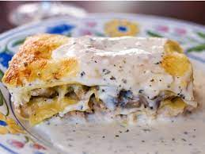

Lasaña con salsa blanca

Descripción
Lasaña tradicional, reemplazando la salsa típica por una salsa blanca.
Opcionalmente se puede reemplazar la carne de res por pollo, ya que ambos tipos de carne acompañan muy bien esta receta.
Ingredientes
Salsa de carne:
- 500 gramos de carne molida (85%). * Reemplazable por pollo.
- 1 tarro (226 gramos) de salsa de tomates.
- 1 tarro (400 gramos) de tomates en cubos.
- 1 cebolla picada en cubitos.
- 1 zanahoria picada en cubos.
Salsa Blanca:
- 4 cucharadas de mantequilla.
- 4 cucharadas de harina.
- 3 tazas de leche entera.
- sal, pimienta, nuez moscada.
Armado:
- 1 paquete de fideos de lasaña.
- 1 taza de queso rallado.
- queso en láminas para cubrir.
Instrucciones
- Poner a calentar agua en una olla grande y cocinar los fideos de lasaña según las instrucciones del paquete.
- Hacer la salsa de carne, en una sartén amplia calentar a fuego medio alto 1 cucharada de aceite vegetal.
- Agregar la cebolla picada fina y la zanahoria, cocinar revolviendo ocasionalmente por 5-8 minutos hasta dorar. Colocar la carne molida en una capa, dejar dorar 3-4 minutos sin revolver, dar vuelta y dorar por el otro lado. Agregar la salsa de tomates y los tomates en cubos revolver y sazonar con sal y pimienta. Dejar reducir a fuego bajo mientras cocinan la salsa blanca.
- Para la salsa blanca, en una olla mediana, derretir la mantequilla a fuego medio, agregar el harina y cocinar por 1 minuto revolviendo todo el tiempo. Sacar del fuego y agregar la leche en un hilo continuo, siempre revolviendo. Devolver a fuego medio, dejar hervir y espesar, sazonar con sal, pimienta y nuez moscada.
- Precalentar el horno 375F o 190C.
- Armar la lasaña en una fuente que pueda ir al horno, enmantequillar ligeramente. Colocar una capa de salsa de carne, una capa de fideos superpuestos para que no queden huecos.
- Seguir con una capa de salsa blanca, espolvorear con queso rallado, otra capa de fideos, una capa de salsa de carne, repetir.
- Terminar con una capa de fideos, salsa blanca y cubrir todo con queso laminado.
- Hornear a 375F o 190C por 25-35 minutos hasta que este dorado y burbujeando.
- Sacar del horno y dejar reposar 10-15 minutos antes de servir.